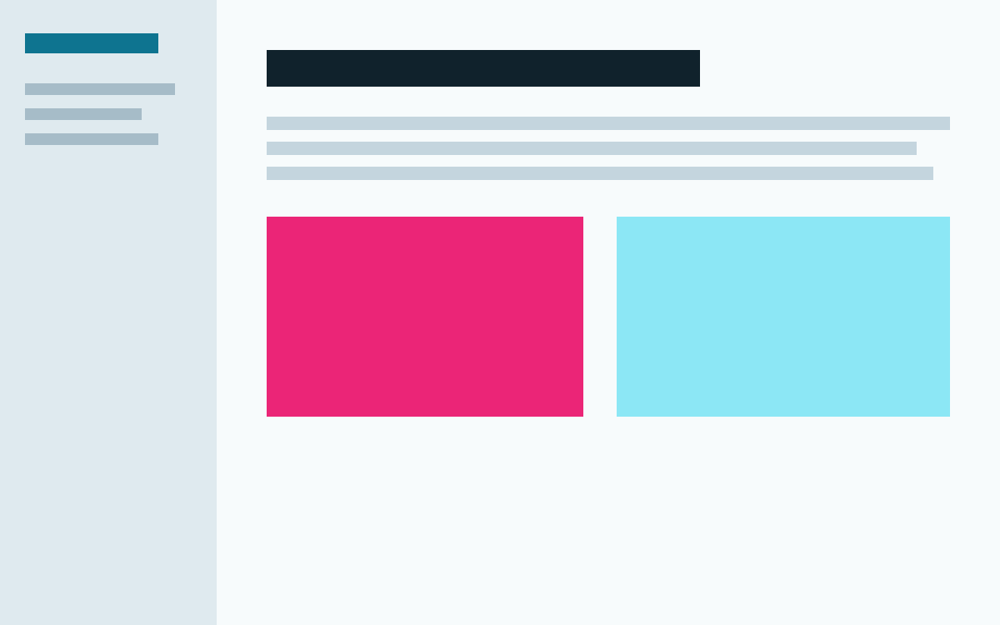

Neues Bürgerportal der Stadtwerke: Zählerstand melden, Abschlag ändern, Störung melden
KERNBarrierefreiFormulare
Das Portal ersetzt drei alte Formularseiten durch einen Einstieg mit Konto. Grundlage ist Kernmix mit eigenem Theme in den Farben der Stadtwerke. Stand: klickbarer Prototyp für die drei häufigsten Anliegen, Test mit fünf Kund*innen im Kundencenter geplant.
Nächste Schritte
Nutzertest mit fünf Personen vorbereiten
Formular „Zählerstand“ auf Fehlermeldungen prüfen
Theme-Farben gegen Kontrast messen
Entscheidungen
Login per E-Mail-Link statt Passwort
Störungsmeldung ohne Konto möglich

Störungsmelder
Störungen im Netz auf einer Karte melden und verfolgen
MobilKarte
Kund*innen melden Ausfälle von Strom, Wasser oder Straßenlicht mit Ort und Foto und sehen den Bearbeitungsstand. Das Konzept klärt, welche Daten wirklich nötig sind und wie die Meldung ohne App funktioniert.
Offen
Datenschutz der Ortsangabe klären
Schnittstelle zur Leitstelle anfragen
Design-System Stadtwerke
Gemeinsame Bausteine für Portal, App und Rechnungen
TokensStorybook
Ein Theme auf Kernmix mit Farben und Schrift der Stadtwerke, dazu drei eigene Bausteine (Zählerkarte, Tarifvergleich, Verbrauchsgrafik). Alle Varianten in hell und dunkel, Kontraste gemessen.
Bausteine
Zählerkarte
Tarifvergleich
Verbrauchsgrafik
Nächste Schritte
Verbrauchsgrafik mit Screenreader testen
Mitgliederbereich
Bereich für Mitglieder: Termine, Protokolle, Abstimmungen
WordPressLogin
Mitglieder des Vereins finden Termine, Protokolle und laufende Abstimmungen an einem Ort. Die Seite ist fertig gebaut und liegt beim Vorstand zur Abnahme.
Rückmeldungen
Schrift in Protokollen größer
Abstimmungen auch per E-Mail ankündigen
Spendenseite
Spendenseite für das Projekt „Streuobstwiese“
SpendenMobil
Eine Seite, die erklärt, wofür gespendet wird, mit Fortschrittsbalken und drei festen Beträgen. Der Prototyp zeigt zwei Varianten der Betragsauswahl.
Offen
Variante wählen
Bilder der Wiese vom Verein
Kampagnen-Landingpage
Landingpage für eine Herbstkampagne der Agentur
Kampagne
Erste Ideen für Aufbau und Botschaft. Wartet auf das Briefing der Agentur.
Wartet auf
Briefing und Texte der Agentur
Barrierefreiheits-Audit
Prüfung einer Shop-Seite nach BITV 2.0 mit Maßnahmenliste
BITVWCAG
Prüfung von 25 Seiten mit Tastatur, Screenreader und Kontrastmessung. Ergebnis ist eine priorisierte Liste mit 41 Befunden, davon 9 blockierend.
Befunde
9 blockierend, 18 mittel, 14 gering
Häufigster Fehler: fehlende Fokusmarkierung
Nächste Schritte
Bericht an die Agentur
Programmheft digital
Spielplan, Tickets und Programmheft des Kulturhauses an einem Ort
VeranstaltungenBarrierefrei
Das gedruckte Programmheft wird zur Website mit Filter nach Sparte und Datum. Veranstaltungen pflegt das Team selbst, die Seite erzeugt daraus auch die Druckfassung.
Nächste Schritte
Filter nach Sparte mit Tastatur testen
Druckfassung aus denselben Daten erzeugen
Seiten in Leichter Sprache
Wichtigste Seiten des Kulturhauses in Leichter Sprache
Leichte Sprache
Anfahrt, Eintritt und Barrierefreiheit vor Ort in Leichter Sprache. Das Konzept legt fest, welche Seiten zuerst übersetzt und von einer Prüfgruppe gelesen werden.
Offen
Prüfgruppe anfragen
Reihenfolge der Seiten festlegen
Mängelmelder Radwege
Schlaglöcher und fehlende Markierungen auf Radwegen melden
KarteMobilOffene Daten
Radfahrende melden Mängel mit Ort und Foto, die Initiative sammelt sie und gibt sie gebündelt an die Stadt. Die Meldungen stehen als offene Daten zur Verfügung.
Entscheidungen
Melden ohne Konto
Fotos werden vor dem Speichern verkleinert und ohne Standortdaten abgelegt
Projektschau (KERN + WordPress)
Die Projektübersicht des Ankerpunkts Hoher Fläming in zwei Fassungen: KERN-Pattern (kern/, öffentlich als projektschau-kern) und WordPress-Plugin (wordpress/)
KERNWordPressPHPJSONGPL (geplant)
Angelegt am 08.10.2026 aus einem Handover-Paket (Bundle vom Server am selben Tag). Die produktive, framework-freie Anwendung auf /projekte/ (Karten + Zeitleiste, zweiachsiger Filter Bereich × Einordnung, DE/EN, Hell/Dunkel, Zustand in der Adresse) soll als Open-Source-Plugin anderen Initiativen angeboten werden. Daten liegen bereits extrahiert in daten/projekte.json (42 Karten, 5 Bereiche, 4 Einordnungen); quelle/ ist die unveränderliche Gestaltungs- und Logikreferenz. Zweites Teilprojekt, unabhängig vom Plugin: Datenaktualisierung per Fragebogen an die Netzwerkmanager:innen. Verwandt: KERN Projektkarten enthält seit 01.09.2026 bereits ein WP-Plugin derselben Technologie auf KERN-Basis mit Demo-Daten.
Leitlinien (Handover 9.2)
Serverseitig rendern, JavaScript nur für Filter und Umschalter
Kapseln: CSS unter Wrapper, keine globalen IDs, kein Zugriff auf Theme-Elemente
Bereiche, Einordnungen und Farben als Daten, nicht als Code
Keine externen Anfragen, keine Schriften, kein CDN
WCAG 2.1 AA als Anforderung; Dunkelmodus und Zweisprachigkeit immer mitprüfen
daten/ und quelle/ nie ins Plugin oder in ein öffentliches Repo
Stand & offene Entscheidungen
Plugin 0.1.1 läuft lokal in DDEV (Stufe 2: Inhaltstyp pu_projekt, Taxonomien für Bereiche und Einordnungen), nicht veröffentlicht
KERN-Pattern 0.1.0 öffentlich als projektschau-kern, Seite projektschau.thinkrepeat.com
Arbeitstitel und Slug projektschau; endgültiger Name offen
Web-App und CLI, die Ferien- und Aushilfsjobs für 16- bis 18-Jährige in der Jobbörse …
PythonKERNJobbörse-APIBITV 2.0
Web-App und CLI, die Ferien- und Aushilfsjobs für 16- bis 18-Jährige in der Jobbörse der Bundesagentur für Arbeit sucht, die Anzeigen auf Eignung für Minderjährige prüft (Ausschluss z. B. bei „ab 18“, Nachtarbeit, Führerschein) und Lohnangaben aus dem Anzeigentext liest. Oberfläche mit dem KERN-Designsystem, lokal eingebunden, barrierefrei und ohne JavaScript benutzbar; kein Tracking, keine Cookies, keine personenbezogenen Daten. Fachlogik kommt aus dem Ausgangsskript in ausgang/. Später Open Source. Angelegt 2026-10-14.
Stand 14.10.2026
Schritt 1: Plan — läuft; gebaut wird erst nach den Freigabe
Code: noch keiner außer dem Ausgangsskript ausgang/ferienjob_finder.py (Python, erzeugt HTML, CSV und JSON)
Datenquelle: Jobbörse-API der Bundesagentur (Suche v6, Details v4), Ratenbegrenzung respektieren, cachen, kein Scraping
Öffentlich teilbare Version des Project Dashboards. Alle persönlichen Daten durch fiktive Beispielprojekte ersetzt. MIT-Lizenz, englischsprachig. Dient als Showcase, Template und Dokumentation des AI-gestützten Meta-Projekt-Prinzips.
Ein Remix von KERN. Design-System auf dem offenen Standard KERN: Themes, Werkzeug-Bausteine für Dashboard und Lagebild, Publikations-Bausteine geplant, Ziel KERN-Katalog
KERNThemeEUPL
den Design-System für eigene Projekte, aufgebaut auf dem offenen Standard KERN (@kern-ux/native 2.8.2): das Kit bleibt unverändert, Themes setzen nur Token-Werte, Bausteine (km-) ergänzen, was KERN nicht mitbringt. Stand 0.4.0 vom 08.11.2026: Themes „Kobalt“ (Standard, dunkel und hell), „Papier“ und KERN ohne Theme; 56 Bausteine mit Doku und Kontrastmessung; eingebaut in Project Dashboard und Lagebild. Online seit 09.11.2026 unter kernmix.thinkrepeat.com, Repo github.com/donludwig/kernmix (Storybook und Prototyp mit erfundenen Daten, öffentlich); Startseite, Impressum, Datenschutz und Gabelseiten von demo.thinkrepeat.com laufen im Theme „Kobalt“ dunkel. Kunden-Design-Systeme bleiben getrennt.
Nächste Schritte
Seitenrahmen (Kopf und Layout) als Baustein, statt je Seite doppelt
Breite der rechten Spalte vereinheitlichen (Dashboard 540, Lagebild 440)
Publikations-Bausteine für Guidebook und Wissensdatenbank
Öffentliches Repo (EUPL-1.2) und Eintrag im KERN-Katalog
Bezug
Nutzer: Project Dashboard, Lagebild, Seiten auf demo.thinkrepeat.com
Ein Claude-Projekt mit Briefvorlagen und Tonregeln der Stadtwerke. Neue Anschreiben entstehen aus den Vorlagen und werden vor dem Versand gegengelesen.
Wissen im Projekt
Tonregeln der Stadtwerke
Zwölf Briefvorlagen
Glossar Fachbegriffe
Satzung und Beitragsordnung Grünes Tal e.V.
Änderungsentwurf für die Mitgliederversammlung
VereinSatzung
Vergleich der alten Satzung mit Mustersatzungen, daraus ein Änderungsentwurf mit Begründung je Paragraf.
Offen
Rückmeldung des Vorstands
Fristen für die Einladung prüfen
Förderantrag Kulturhaus Kulturhaus am Fluss
Antrag für eine barrierefreie Veranstaltungsreihe
FörderungKultur
Erste Fassung des Projektblatts mit Zielen, Zielgruppen und Kostenplan. Wartet auf die Zahlen des Kulturhauses.
Wartet auf
Kostenplan vom Kulturhaus
Umfrage Radwege auswerten Radinitiative Nord
412 Antworten zu Mängeln und Wünschen
UmfrageDaten
Auswertung der Mitgliederumfrage: häufigste Mängel, Orte mit den meisten Nennungen, Vorschläge an die Stadt.
Ergebnisse
Schlaglöcher am häufigsten genannt
Drei Kreuzungen mit Vorrang
Listen
Über dieses Projekt & Agents
Project Dashboard
Alle Projekte auf einen Blick
mit Stand, Aufgaben und Verbindungen
Eine einzige HTML-Datei, ohne Server und ohne Konto. Sie zeigt, woran gerade gearbeitet wird, was als Nächstes ansteht und wo Projekte voneinander lernen können. Gepflegt wird sie mit Claude Code und drei Agenten, die Zahlen, Stand und Synergien aktuell halten.
Projekte
–
Kund*innen
–
offene Aufgaben
–
Skills
–
Wie das Dashboard entsteht
Quellen sind deine Projektordner, CLAUDE.md und Memory sowie die Tickets. scan.sh misst, die Generatoren schreiben daraus eine einzige HTML-Datei, die du ohne Server im Browser öffnest.
Was es kann
Projektübersicht
Jedes Projekt mit Phase, letzter Änderung und Links, gruppiert nach Kund*innen oder Werkzeug. Spalten-Sets zeigen nur, was du gerade brauchst.
Suche mit Filtern
Findet Projekte, Aufgaben, Memory und Notizen. Mit person:, tag: oder -wort wird aus der Suche ein genauer Filter.
Projektdetails
Eine Karte je Projekt: Kurzbeschreibung, Fakten, Stand, nächste Schritte und alle Dokumente zum Öffnen oder Kopieren.
Aufgaben
Tickets aus Obsidian, direkt hier abhaken und bearbeiten. Überfällige Termine fallen sofort auf.
Synergien
Ein Agent findet Verbindungen zwischen Projekten und sagt, was du davon hast und was der nächste Schritt ist.
Skills und Kürzel
Alle Skills mit ihrem Zweck, eine Grafik zeigt, wer wen aufruft. Kürzel wie +cl oder +up stoßen ganze Abläufe an.
Ideen und Temporäres
Einfälle und kurze Arbeitsordner bekommen eine Karte, bevor daraus ein Projekt wird.
Demo-Modus
Ein Schalter unten links zeigt erfundene Daten. So lässt sich das Dashboard vorführen, ohne Kundendaten zu zeigen.
Eigenes Design-System
Gebaut auf Kernmix, das auf dem offenen Standard KERN aufsetzt: Hell und Dunkel, gemessene Kontraste, jede Komponente im Storybook.
Zahlen, Dokumente und Synergien pflegt niemand von Hand. Drei Agenten in Claude Code übernehmen das: einer misst, einer vergleicht, einer koordiniert und übernimmt das Ergebnis.
Cockpit verteilt die Aufträge, Radar und Bridge arbeiten parallel. Erst nachdem Cockpit ihre Befunde geprüft hat, landen sie im Dashboard.
Cockpit
Koordiniert und baut ein
Sitzungsmodell
Startet Radar und Bridge, prüft ihre Befunde nach und übernimmt das Ergebnis ins Dashboard. Entwickelt die Seite weiter.
Ergebnis: ein geprüftes, aktuelles Dashboard.
So startest du ihn
claude --agent cockpit im Dashboard-Ordner
Radar
Misst den Stand
Sonnet
Liest alle Projektordner: Dateien, Zeilen, letzte Änderung, Stunden, CLAUDE.md und Memory. Daraus aktualisiert er Übersicht, Dokumenttabellen und Inventar.
Ergebnis: aktuelle Zahlen und Hinweise auf fehlende oder veraltete Notizen.
So startest du ihn
in einer Sitzung: „Lass Radar alle Projekte scannen.“
Bridge
Findet Verbindungen
Opus
Vergleicht Projekte inhaltlich, etwa Tokens, Komponenten und Entscheidungen, und erkennt, wo eine Lösung auch an anderer Stelle hilft.
Ergebnis: Synergie-Karten mit Nutzen und nächstem Schritt, dazu Vorschläge für die Aufgaben.
So startest du ihn
in einer Sitzung: „Lass Bridge nach Synergien suchen.“
So arbeiten sie zusammen
1. Du startest Cockpit
Mit claude --agent cockpit beginnt eine Sitzung, in der Cockpit die Regie führt.
2. Radar und Bridge arbeiten parallel
Cockpit gibt beiden ihren Auftrag. Radar misst mit dem schnellen Modell Sonnet, Bridge vergleicht mit dem gründlichen Modell Opus.
3. Cockpit prüft und übernimmt
Befunde werden nachgeprüft, bevor sie im Dashboard landen. Danach stimmen Zahlen, Dokumente und Synergien wieder.
Gut zu wissen
Agent
Modell
Darf
Liefert
Cockpit
wie die Sitzung
Radar und Bridge starten, Dateien lesen und ändern, Befehle ausführen
Radar und Bridge können keine weiteren Agenten starten, das darf nur Cockpit. Für einen schnellen Lauf reicht es, Radar oder Bridge direkt in einer Sitzung zu beauftragen. Die Agenten liegen in ~/.claude/agents/.
Allgemein 47für alle Projekte und Kund*innen nutzbar
Admin-Leiste für Prototypen
prototyp-adminbar
Baut die Admin-Leiste für Prototypen: Varianten, Geräte und Entscheidungen umschalten, Zustand als Link teilen, links oder oben. Damit jedes Werkzeug gleich funktioniert und nie in die Lieferung rutscht.
Schreibt Angebote in deinem gewohnten Aufbau, schätzt den Aufwand und macht ein PDF daraus. Damit kein Angebot mehr bei null anfängt.
GlobalStand 31.10.2026auch in Desktop + iPhoneSKILL.md
Belegte Recherche
research
Recherchiert eine Frage mit mehreren Suchen und prüft jede Aussage gegen ihre Quelle. Für Antworten, auf die du dich verlassen musst, etwa Fristen und Zahlen.
Sorgt dafür, dass jede Änderung im selben Zug in Changelog, Doku und eingebetteten Kopien landet. Damit niemand nachfragen muss, was sich geändert hat.
Baut deine eigenen Design-Systeme direkt hier in Claude Code, standardmäßig auf KERN: Varianten dunkel und hell zum Vergleichen, Kontraste gerechnet, deine Wahl wird zum Theme. Damit Dashboard, Lagebild und Guidebook einem Standard folgen.
Designs von Figma nach Penpot bringen und den Weg wählen: Exporter-Plugin, Nachbau über zwei MCP-Server oder beides; mit Regeln für exportfreundliche Dateien, Penpot-MCP-Einrichtung, Grenzen, Performance und Kriterien für einen Wechsel.
Pingpong zwischen Prototyp, Figma und Agent: baut aus Prototyp und Recherche ein Figma-Workbook mit Spielwiese aus Library-Instanzen und holt markierte Ideen zurück in die nächste Prototyp-Version.
Prüft, ob ein Förderprogramm zur Projektidee passt, zählt die Punkte und schreibt die Antragstexte in den Feldlängen. Jede Zahl bekommt einen Beleg.
GlobalStand 10.11.2026auch in Desktop + iPhoneSKILL.md
Fotos weitergeben
fotos-weitergeben
Begleitet die Weitergabe deiner Fotos: Nutzungsbedingungen, Urheberangaben, Alt-Texte, Begleitmail und Post. Damit deine Rechte und die der Abgebildeten gewahrt bleiben.
GlobalStand 31.10.2026auch in Desktop + iPhoneSKILL.md
Freigaben aufräumen
freigaben-aufraeumen
Räumt die Freigabe-Listen in den Projekteinstellungen auf und repariert Regeln, vor denen Claude Code warnt. Damit nichts mehr erlaubt ist als nötig.
Macht aus einem Markdown-Text ein gestaltetes PDF zum Drucken oder für den E-Reader. So sehen Berichte und Handbücher gut aus, ohne Layoutprogramm.
GlobalStand 19.11.2026auch in Desktop + iPhoneSKILL.md
Gestaltungsregeln
gestaltungsregeln
Sammelt Gestaltungsregeln, die in jedem Projekt gelten, mit Rezept für CSS, Figma und PDF und einer Prüfung am Bild. Damit sie nicht jedes Mal neu gesagt werden müssen.
Begleitet einen Upload auf die eigene Website per rsync über SSH: Probelauf mit Liste (neu, geändert, gelöscht), deine Freigabe per Dialog mit Knopf „Hochladen“, nur Geändertes hochladen, bei neuer Version die Übersichtsseite gleich mit, Prüfung danach, Lagebild nachziehen, Impressum und Datenschutz. Damit nichts ohne dein Okay online geht.
Liest deutsche Texte gegen und streicht KI-Floskeln, Gedankenstriche und „nicht X, sondern Y“, damit sie nach dir klingen; Inhalt und Zahlen bleiben.
GlobalStand 08.11.2026auch in Desktop + iPhoneSKILL.md
KI-Floskeln streichen (Englisch)
stop-slop-en
Liest englische Texte gegen und streicht typische KI-Muster wie Em-Dashes, „not just X, but Y“ oder „delve“; Inhalt und Zahlen bleiben.
GlobalStand 09.11.2026auch in Desktop + iPhoneSKILL.md
Knowledge Base aktualisieren
kb-aktualisieren
Pflegt deine Knowledge Base: hält eine Erkenntnis aus dem Gespräch als Note fest, sammelt seit dem letzten Lauf neues Wissen aus Skills, Memories und Projekten als Entwürfe, lässt Notes nach deinem Okay reifen, baut den Viewer neu und schlägt vor dem Herleiten einer Regel oder Falle dort nach. Ohne Namen, Kundeninhalte oder Zugangsdaten.
Schreibt die Doku einer Design-System-Komponente, mit Namensvorschlägen und Blick auf andere Systeme. Damit Komponenten verständlich und einheitlich beschrieben sind.
GlobalStand 12.11.2026auch in Desktop + iPhoneSKILL.md
Kopiertext
kopiertext
Schreibt Nachrichten für Signal, Mattermost oder Mail so, dass du sie direkt kopieren kannst, ohne KI-Floskeln und ohne Entstehungsspuren. Damit Texte an Kund*innen und Team gleich rausgehen können.
GlobalStand 16.11.2026auch in Desktop + iPhoneSKILL.md
Link-Archiv
link-archiv
Pflegt das Link-Archiv: neue Links aus dem Zen-Ordner „New“ prüfen und einsortieren, neue Links aus Recherchen und Memorys aufnehmen und vor einer Recherche nachschlagen, ob es zum Thema schon etwas gibt, auch Verworfenes. Jeder Link steht mit Herkunft, Grund, Datum und Status im Register des Projekts eigen-link-archiv.
Legt eine neue Prototyp-Version an, mit Changelog, Fassung zum Doppelklicken und Links zum Teilen. Damit jede Feedbackrunde einen sauberen, vergleichbaren Stand hat.
Setzt ein einfaches Passwort auf einen Ordner der Demo-Website, Benutzer ist der Kundenname, Passwort ein Wort. Damit Kund*innen schnell Feedback geben können und der Stand nicht offen im Netz liegt. Alte Links leiten vor der Abfrage weiter, man meldet sich nur einmal an.
Öffnet nach einem Export den Ordner und markiert die neueste Datei im Finder, mit klickbarem Pfad in der Antwort. Damit du nach PDFs, Bildern oder Zips nicht suchen musst.
Prüft jedes neue Paket, Werkzeug oder Add-on, bevor es installiert wird: Ist es das Original, wer pflegt es, gibt es bekannte Lücken? Installiert wird nur mit fester Version, sieben Tagen Wartezeit und gesperrten Install-Skripten. So kommt kein Schadcode über gefälschte Namen oder frisch gekaperte Versionen ins Projekt.
Schreibt Texte über dich, von der kurzen Bio bis zum Motivationsschreiben, aus einer gepflegten Profildatei. Damit du dich nicht jedes Mal neu beschreiben musst.
GlobalStand 31.10.2026auch in Desktop + iPhoneSKILL.md
Projekt anlegen
projekt-anlegen
Legt ein neues Projekt mit allem an, was dazugehört: Ordner, Projektregeln, Memory und Eintrag im Dashboard; Projekte mit Oberfläche starten gleich auf Kernmix mit gewähltem Theme. Damit kein Projekt unsichtbar bleibt, weil ein Schritt fehlt.
Legt für ein Projekt in Zen einen festen Platz an: alle wichtigen Links als schlafende Tabs, sortiert in Ordner und Unterordner (etwa Kunde und Projekt), als eigener Space oder als Ordner im Kunden-Space. Die Links stehen in der LINKS.md des Projekts, so öffnet das Werkzeug nie Adressen aus dem Gespräch.
Sucht in allen Ordnern nach Seiten, Werkzeugen, Temp-Ordnern und Ideen, die längst ein eigenes Projekt verdient hätten, und schlägt je Fund vor: eigenes Projekt, Unterprojekt, bleibt oder aufräumen.
Übergibt ein Projekt zwischen Claude Code, Desktop und Design in jede Richtung, mit allen Fakten, damit drüben nahtlos weitergeht. In der Desktop-App heißt das Gegenstück project-handover.
GlobalStand 09.11.2026auch in Desktop + iPhoneSKILL.md
Protokoll
protokoll
Macht aus Mitschnitten, Notizen und Chats ein sauberes Protokoll, in dem nichts fehlt und klar steht, wer bis wann was erledigt.
GlobalStand 18.11.2026auch in Desktop + iPhoneSKILL.md
Regeln reflektieren
regeln-reflektieren
Schaut nach einer Sitzung zurück, was schiefging, und schlägt bessere und kürzere Regeln vor. Du entscheidest jeden Vorschlag einzeln.
Macht aus einem deiner Skills eine Fassung zum Weitergeben: ohne Namen, Kund*innen, Pfade, Server und Zugangsdaten. Ein Prüfskript sucht nach allem, was nicht raus darf, vorher Gegenlesen gegen KI-Floskeln schon in der Quelle, dazu Sichtprüfung der Beilagen und Paket-Check für Skripte; das Zip entsteht erst ohne Befund, verschickt wird nur auf dein Ja.
Misst, ob ein neues Software-Projekt bereit ist, dass ein Agent Code schreibt, und was bis zum Start fehlt: Punkte von 100, Ampel je Arbeitspaket, die drei größten Hebel. Damit klar ist, welche Entscheidung zuerst fallen muss.
Räumt den Temp-Ordner auf: zeigt je Ordner Größe, Alter und Einordnung, verschiebt nach deinem Ja in einen Aufgeräumt-Ordner statt zu löschen und zieht die Temp-Karten nach.
Legt für eine kurze Arbeit wie ein Ticket oder ein Review einen kleinen Ordner im Temp-Projekt an, mit Aufgabe und Stand, als Karte unter „Ideen und Temporäres“ statt als volles Projekt. Damit Kleines nicht als volles Projekt endet und trotzdem nichts verloren geht.
Macht die Vorschaubilder für Dashboard, Demo-Startseite und Portfolio nach einheitlichen Regeln: mehr vom Bildschirm, hohe Auflösung, hell und dunkel, geschützte Seiten auslassen, Inhalt vor der Weitergabe prüfen.
Prüft WordPress- und statische Seiten nach deiner Sicherheits-Wissensbasis und schreibt einen Prüfbericht. Neue Erkenntnisse fließen zurück in die Wissensbasis.
Von links nach rechts: Einstiege (ruft niemand auf), Vermittler und Helfer (werden aufgerufen und rufen selbst auf; Helfer stehen näher an den Bausteinen), Bausteine (rufen nichts auf). Ein Klick auf eine Kategorie hebt ihre Skills hervor; der Farbstreifen zeigt die Kategorie. Klick (oder Tab und Enter) auf einen Skill hält ihn fest: ruft auf, wird aufgerufen von, darunter als Liste mit Sprung zur Karte. Erneuter Klick oder Esc hebt auf. Gestrichelt = fragt dich vorher. Der Skill-Helfer kennt alle und fehlt deshalb hier.
ruft auffragt dich vorher3wird von 3 Skills aufgerufen
Legende
Spalten
Von links nach rechts: Einstiege startest du selbst, kein anderer Skill ruft sie auf. Vermittler und Helfer werden aufgerufen und rufen selbst weitere auf; Helfer stehen näher an den Bausteinen. Bausteine erledigen eine Sache und rufen nichts auf.
Pfeile
durchgezogen: der Skill ruft den anderen auf (Pfeilspitze beim aufgerufenen). gestrichelt, türkis: er fragt dich vorher (in beide Richtungen, auch hervorgehoben). Linien, die links aus einem Skill herauskommen, führen zurück zu einem Skill in einer linken Spalte; Bögen links am Kasten zu einem Skill in derselben Spalte.
Hervorhebung
Nach Klick auf einen Skill: Akzentfarbe = ruft er auf, orange = wird von diesen aufgerufen. Nach Klick auf eine Kategorie: ihre Skills und deren Verbindungen.
Farbstreifen links
Texte und Kommunikation
Prototyp und Veröffentlichung
Projekte und Regeln
Design-Systeme
Sicherheit und WordPress
Zahl rechts
von wie vielen Skills dieser aufgerufen wird.
Symbol
dasselbe wie auf der Karte des Skills weiter oben.
Projekt anlegen ruft auf: Design-System bauen, Paket-Check, Projekt-Kandidaten finden, Öffentliche Repos, Sichtprüfung, Startklar, Vorschaubilder erstellen, Projekt in Zen
Projekt-Kandidaten finden ruft auf: Idee festhalten, Projekt anlegen, Regeln reflektieren, Temp aufräumen, Temp-Projekt anlegen
Projekt-Übergabe ruft auf: Changelog pflegen, Design-System bauen, Fremden Stand laden, Kopiertext, Projekt anlegen, Regeln reflektieren, Sichtprüfung, Stand abholen
Protokoll ruft auf: Kopiertext, Gestaltetes PDF, Neue Aufgabe, Ticket schreiben
Admin-Leiste für Prototypen ruft auf: Figma-Pingpong, Kopiertext, Neue Prototyp-Version, Sichtprüfung
Neue Prototyp-Version ruft auf: Changelog pflegen, Figma-Pingpong, Kopiertext, Ordner zeigen, ponytail (Plugin), Admin-Leiste für Prototypen, Sichtprüfung, Hochladen
WordPress-Prüfung ruft auf: Knowledge Base aktualisieren, Paket-Check, ponytail (Plugin), Sichtprüfung
Projekt in Zen ruft auf: Link-Archiv, Projekt anlegen, Neue Prototyp-Version, Hochladen
Global = gilt in allen Projekten, Geteilt = ein Ordner in mehreren Projekten, Projekt = nur in einem Projekt. Neu erzeugen mit python3 tools/build-skills.py.
Ideen und Temporäres
Barrierefreie Formular-Bibliothek
Geprüfte Formularbausteine für Vereine und Kommunen, die ohne Programmierkenntnisse eingesetzt werden können.
IdeeFormulareBarrierefrei
Geprüfte Formularbausteine für Vereine und Kommunen, die ohne Programmierkenntnisse eingesetzt werden können.
Energie-Spartipps als Wochenmail
Kurze Tipps der Stadtwerke, abgestimmt auf Jahreszeit und Verbrauch, als freiwillige Mail.
IdeeNewsletter
Kurze Tipps der Stadtwerke, abgestimmt auf Jahreszeit und Verbrauch, als freiwillige Mail.
Review Kontaktformular Kulturhaus
Einmaliges Review des Kontaktformulars auf Barrierefreiheit und Datenschutz.
TemporärOffen
Einmaliges Review des Kontaktformulars auf Barrierefreiheit und Datenschutz.
Stand: Befunde notiert, Rückmeldung an das Kulturhaus vorbereitet.
Shortcuts
15 Kürzel für den Prompt
Ein Kürzel ist + plus zwei Buchstaben, frei stehend irgendwo im Prompt oder am Ende.
Bau den Hover-State ein. +cl +sp +up
Mehrere Kürzel laufen in fester Reihenfolge ab, egal wie getippt: Inhalt, Prüfen, Ausgeben, Veröffentlichen (cl, ku, ss, sp, za, up). Unbekanntes Kürzel: nachfragen, nicht raten.
Inhalt 2nachziehen, kürzen
+cl
Changelog und alle Ziele nachziehen („standard bitte“)
Zuletzt geschriebenen Text (Kopiertext, Doku, Mail) auf höchstens die Hälfte kürzen: Kernaussage, Bitten, Entscheidungen und offene Punkte bleiben, Begründungen nur als Link oder ein Halbsatz; Datei überschreiben, neu ausgeben
Quelle ist die Tabelle in ~/.claude/CLAUDE.md, Abschnitt „Kürzel im Prompt“. Neu erzeugen mit python3 tools/build-skills.py.
Design-Systeme
Kernmix 0.21.0
Eigene Seiten bauen auf Kernmix auf; Kunden-Design-Systeme bleiben getrennt in ihren Projekten.
Eigenes System
Kernmix 0.21.0
Theme und Bausteine auf dem offenen Standard KERN. Themes: Kobalt (Standard), nachtblau, Papier. Genutzt von Project Dashboard und Lagebild. Vor jeder neuen Seite die Seitenregeln lesen.
 Bürgerportal Relaunch
Bürgerportal Relaunch Störungsmelder
Störungsmelder Design-System Stadtwerke
Design-System Stadtwerke Mitgliederbereich
Mitgliederbereich Spendenseite
Spendenseite Kampagnen-Landingpage
Kampagnen-Landingpage Barrierefreiheits-Audit
Barrierefreiheits-Audit Programmheft digital
Programmheft digital Seiten in Leichter Sprache
Seiten in Leichter Sprache Mängelmelder Radwege
Mängelmelder Radwege Projektschau (KERN + WordPress)
Projektschau (KERN + WordPress) Ferienjob-Finder
Ferienjob-Finder Project Dashboard (Public)
Project Dashboard (Public) Kernmix
Kernmix Kundenbriefe Stadtwerke
Kundenbriefe Stadtwerke  Satzung und Beitragsordnung
Satzung und Beitragsordnung  Förderantrag Kulturhaus
Förderantrag Kulturhaus  Umfrage Radwege auswerten
Umfrage Radwege auswerten